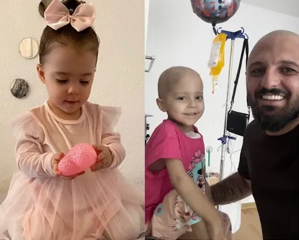
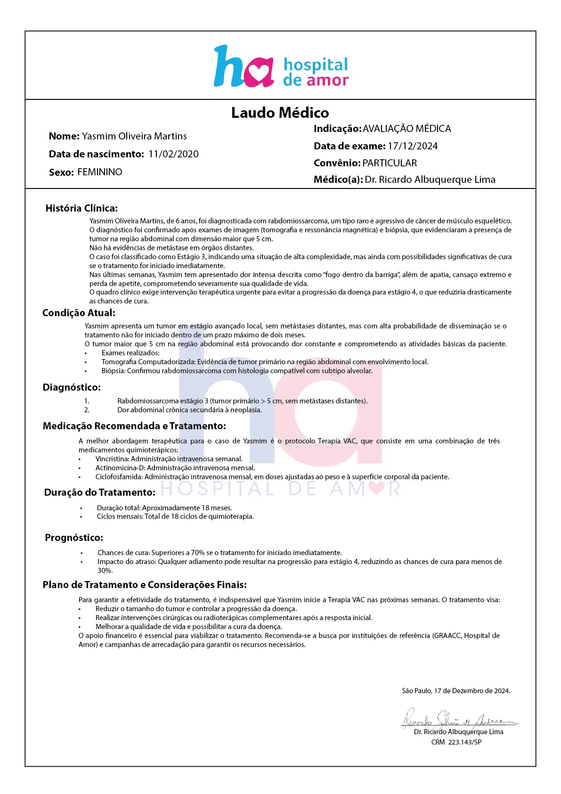

Ela não tem coragem de falar, mas pergunta com os olhos: “papai, por que a dor não vai embora?”

Meu nome é Ronaldo Placido, e sou pai de três meninas lindas: a Lívia, a Ana e minha caçula, a Yasmim.
Desde que minha esposa faleceu em 2024, eu tento ser tudo pra elas: pai, mãe, amigo, herói.
Quando você é pai, parece que o mundo gira em torno dos seus filhos, e pra mim é exatamente isso.
Mas hoje… hoje eu me sinto um nada.
A Yasmim, meu pedacinho de céu, foi diagnosticada com um tumor raro chamado Rabdomiossarcoma.
É um câncer agressivo que aos poucos vem tirando o brilho da minha filha, uma criança que foi sempre alegre, sorridente e amorosa.
Agora, ela passa os dias sentindo uma dor que ela chama de "fogo dentro da barriga".
É como se a vida tivesse jogado gasolina dentro dela e colocado fogo.
No Natal, enquanto as outras crianças rasgavam os embrulhos dos presentes, a Yasmim só queria ficar deitada.
"Papai, dói muito", ela não aguentou e me disse.

Eu trabalhava em um armazém, subia e descia escada, carregava várias caixas pesadas, sempre dei duro porque é era o que eu sabia fazer.
Só que infelizmente, fui demitido do trabalho, pois hoje meu tempo é somente para minhas filhas.
Cuidar de 3 filhas é mais difícil hoje em dia, principalmente na atual situação do país.
Eu amo ela, e nunca vou me arrepender de ter tido as minhas filhas.
Só que infelizmente, minha esposa morreu.
E agora um câncer apareceu na vida da minha filha.
Foi sem aviso, de surpresa e sem a menor piedade com ela, apenas uma criança inocente.
Quando o médico me disse que o tratamento da Yasmim não seria coberto pelo SUS, eu tive vontade de gritar de raiva.
Eles não tem piedade nem mesmo de uma criança.
O tratamento envolve uma terapia de ponta que não está disponível no SUS.
Sabe o que é mais cruel?
Ver o olhar de confiança da Yasmim, tendo certeza de que eu vou ser capaz de curar ela.
O sarcoma está em estágio 3.
Isso quer dizer que tumor é maior do que 5 cm, mas Graças ao bom Deus ainda não há metástase (quando o câncer se espalha pelo corpo).
Se o tratamento for iniciado rápido, os médicos disseram que há chances de cura de mais de 70%.
Mas a cada minuto que passa, a expectativa dela diminui.
Eu irei até o fim pela minha filha, nem que eu tenha que morrer tentando.
Infelizmente o tempo dela está acabando.
Enquanto isso, os médicos disseram que se a gente não começar o tratamento em no máximo 2 meses, o tumor pode progredir para estágio 4 e depois metástase.
A prioridade agora é agir rápido e evitar a progressão de estágio.
Ela precisa fazer um tratamento chamado “Terapia VAC”.
Essa terapia envolve 3 medicamentos, Vincristina, Actinomicina-D e Ciclofosfamida.
Deus é Amor.
Esse amor é justamente o que falta nos dias de hoje.
Um simples gesto de amor como esse torna você grande aos olhos de Deus.
Clique agora abaixo e faça a sua doação.
Não importa o valor, mas sim o quanto seu coração diz que você pode.
Quanto custa uma saída no final de semana?
Mais de R$100 na maioria dos casos.
Se cada pessoa doar 100 reais ou mais, minha filha vai viver.
Ela precisa, é questão de vida ou morte.
As coisas não acontecem por acaso, se Deus te colocou aqui, é porque ele conhece o seu coração.
Então clique abaixo e faça a sua doação.
Clique no valor que deseja doar.
Beneficiário: Jeferson Rodrigues (Pai)
jrpedrosorodrigo@gmail.com
Pix Copiado
Deus é testemunha do seu sacrifício, e você será recompensado em 7 vezes mais por isso.
Jesus se sacrificou por nós.
Agora, você decide se a Yasmim vive ou não.
Ao escolher clicar abaixo e fazer a sua doação, você decide pela vida da minha filha.